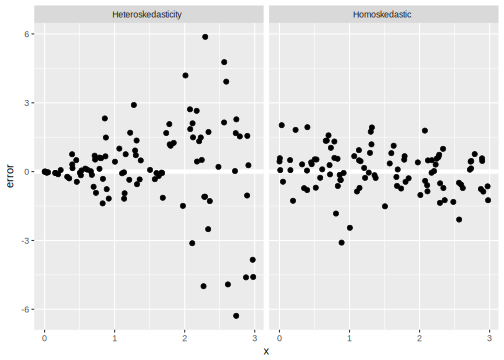

Chapter 10 Problems with Errors
10.1 Prerequisites
In addition to tidyverse pacakges, this chaper uses the sandwich and lmtest packages which provide robust standard errors and tests that use robust standard errors.
library("sandwich")
library("lmtest")
library("tidyverse")
library("broom")
library("modelr")10.2 Heteroskedasticity
\[ \hat{\beta} = (\mat{X}\T \mat{X})^{-1} \mat{X}\T \vec{y} \] and \[ \Var(\vec{\epsilon}) = \mat{\Sigma} \] is the variance-covariance matrix of the errors.
Assumptions 1-4 give the expression for the sampling variance, \[ \Var(\hat{\beta}) = (\mat{X}'\mat{X})^{-1} \mat{X}\T \mat{\Sigma} \mat{X} (\mat{X}\T \mat{X})^{-1} \] under homoskedasticity, \[ \mat{\Sigma} = \sigma^2 \mat{I}, \] so the the variance-covariance matrix simplifies to \[ \Var(\hat{\beta} | X) = \sigma^2 (\mat{X}\T \mat{X})^{-1} \]
Homoskedastic: \[ \Var(\vec{\epsilon} | \mat{X}) = \sigma^2 I = \begin{bmatrix} \sigma^2 & 0 & 0 & \cdots & 0 \\ 0 & \sigma^2 & 0 & \cdots & 0 \\ \vdots & \vdots & \vdots & \ddots & \vdots \\ \sigma^2 & 0 & 0 & \cdots & \sigma^2 \end{bmatrix} \]
Heteroskedastic \[ \Var(\vec{\epsilon} | \mat{X}) = \sigma^2 I = \begin{bmatrix} \sigma_1^2 & 0 & 0 & \cdots & 0 \\ 0 & \sigma_2^2 & 0 & \cdots & 0 \\ \vdots & \vdots & \vdots & \ddots & \vdots \\ \sigma^2 & 0 & 0 & \cdots & \sigma_n^2 \end{bmatrix} \] - independent, since the only non-zero values are on the diagonal, meaning that there are no correlated errors between observations - non-identical, since the values on the diagonal are not equal, e.g. \(\sigma_1^2 \neq \sigma_2^2\). - \(\Cov(\epsilon_i, \epsilon_j | \mat{X}) = 0\) - \(\Var(\epsilon_i | \vec{x}_i) = \sigma^2_i\)
tibble(
x = runif(100, 0, 3),
`Homoskedastic` = rnorm(length(x), mean = 0, sd = 1),
`Heteroskedasticity` = rnorm(length(x), mean = 0, sd = x)
) %>%
gather(type, `error`, -x) %>%
ggplot(aes(x = x, y = error)) +
geom_hline(yintercept = 0, colour = "white", size = 2) +
geom_point() +
facet_wrap(~ type, nrow = 1)
Consequences
- \(\hat{\vec{\beta}}\) are still unbiased and consistent estimators of \(\vec{\beta}\)
- Standard error estimates are biased, likely downward, meaning that the estimated standard errors will be smaller than the true standard errors (too optimistic).
- Test statstics won’t be distributed \(t\) or \(F\)
- \(\alpha\)-level tests will have Type I errors \(\neq \alpha\)
- Coverage of confidence intervals will not be correct.
- OLS is not BLUE
Visual diagnostics
- Plot residuals vs. fitted values
- Spread-location plot.
- y: square root of absolute value of residuals
- x: fitted values
- loess trend curve
Dealing with NCV
- Transform the dependent variable
- Model the heteroskedasticity using WLS
- Use an estimator of \(\Var(\hat{\beta} | \mat{X})\) that is robust to heteroskedasticity
- Admit we are using the wrong model and use a different model
The standard way to “fix” robust heteroskedasticity is to use so-called “robust” standard errors, more formally called Heteroskedasticity Consistent (HC), and heteroskedasticity and Autocorrelation Consistent standard errors. HC and HAC errors are implemented in the R package sandwich. See Zeileis (2006) and Zeileis2004a for succint discussion of the estimators themselves and examples of their usage.
With robust standard errors, the coefficients of the model are estimated using lm(). Then a HC or HAC variance-covariance matrix is computed which corrects for heteroskedasticity (and autocorrelation).
10.2.1 Example: Duncan’s Occupation Data
mod <- lm(prestige ~ income + education + type, data = car::Duncan)The classic OLS variance covariance matrix is,
vcov(mod)## (Intercept) income education typeprof typewc
## (Intercept) 13.7920916 -0.115636760 -0.257485549 14.0946963 7.9021988
## income -0.1156368 0.007984369 -0.002924489 -0.1260105 -0.1090485
## education -0.2574855 -0.002924489 0.012906986 -0.6166508 -0.3881200
## typeprof 14.0946963 -0.126010517 -0.616650831 48.9021401 30.2138627
## typewc 7.9021988 -0.109048528 -0.388119979 30.2138627 37.3171167and the standard errors are the diagonal of this matrix
sqrt(diag(vcov(mod)))## (Intercept) income education typeprof typewc
## 3.7137705 0.0893553 0.1136089 6.9930065 6.1087737Now, use vcovHC to estimate the “robust” variance covariance matrix
vcovHC(mod)## (Intercept) income education typeprof typewc
## (Intercept) 15.2419440 -0.233347755 -0.255838779 25.6093353 12.4984902
## income -0.2333478 0.023224098 -0.009806392 -0.6101496 -0.4039528
## education -0.2558388 -0.009806392 0.019805541 -0.7730126 -0.4128297
## typeprof 25.6093353 -0.610149584 -0.773012579 90.8056216 52.2164675
## typewc 12.4984902 -0.403952792 -0.412829731 52.2164675 42.2001856and the robust standard errors are the diagonal of the matrix
sqrt(diag(vcovHC(mod)))## (Intercept) income education typeprof typewc
## 3.9040932 0.1523945 0.1407322 9.5291984 6.4961670Note that the robust standard errors are larger than the classic standard errors; this is almost always the case.
If you need to use the robust standard errors to calculate t-statistics or p-values.
coeftest(mod, vcovHC(mod))##
## t test of coefficients:
##
## Estimate Std. Error t value Pr(>|t|)
## (Intercept) -0.18503 3.90409 -0.0474 0.962436
## income 0.59755 0.15239 3.9210 0.000337 ***
## education 0.34532 0.14073 2.4537 0.018589 *
## typeprof 16.65751 9.52920 1.7480 0.088128 .
## typewc -14.66113 6.49617 -2.2569 0.029547 *
## ---
## Signif. codes: 0 '***' 0.001 '**' 0.01 '*' 0.05 '.' 0.1 ' ' 1TODO An example that uses vcovHAC() to calculate heteroskedasticity and autocorrelation consistent standard errors.
10.2.1.1 WLS vs. White’s esimator
WLS:
- different estimator for \(\beta\): \(\hat{\beta}_{WLS} \neq \hat{\beta}_{OLS}\)
- With known weights:
- efficient
- \(\hat{\se}(\hat{\beta}_{WLS})\) are consistent
- If weights aren’t known … then biased for both \(\hat{\beta}\) and standard errors.
White’s esimator (heteroskedasticity consistent standard errors):
- uses OLS estimator for \(\beta\)
- consistent for \(\Var(\hat{\beta})\) for any form of heteroskedasticity
- relies on consistency and large samples, and for small samples the performance may be poor.
10.2.2 Notes
An additional use of robust standard errors is to diagnose potential model fit problems. The OLS line is still the minimum squared error of the population regression, but large differences may suggest that it is a poor approximation. King and Roberts (2015) suggest a formal test for this using the variance-covariance matrix.
- Note that there are other functions that have options to input variance-covariance matrices along with the
lmobject in order to use robust standard errors with that test or routine. - Heteroskedastic consistent standard errors can be used with MLE models (White 1982). However, this is
- More generally, robust standard errors can be controversial: King and Roberts (2015) suggest using them to diagnose model fit problems.
10.3 Non-normal Errors
This really isn’t an issue. Normal errors only affect the standard errors, and only if the sample size is small. Once there is a reasonably large residual degrees of freedom (observations minus parameters), the CLT kicks in and it doesn’t matter.
If you are concerned about non-normal error it may be worth asking:
- Is the functional form, especially the form of the outcome varaible, correct?
- Is the conditional expected value (\(Y | X\)) really the best estimand? That’s what the regression is giving you, but the conditional median or other quantile may be more appropriate for your purposes.
To diagnose use a qq-plot of the residuals against a normal distribution.
10.4 Clustered Standard Errors
Clustering is when observations within groups are correlated.
Suppose there are \(J\) equal sized clusters with \(m\) units from each cluster, and total sample size of \(J m\). The mean of a vector \(y\) is \(\hat{y}\), and its standard error is (Gelman and Hill 2007, 447) \[ \se(\bar{y}) = \sqrt{\sigma^2_y / n + \sigma^2_{\alpha} / J}, \] where \(\sigma^2_{\alpha}\) is the variance of the cluster level means, and \(\sigma^2_{y}\) is variance of the intra-cluster residuals. This can also be rewritten as, \[ \se(\bar{y}) = \sqrt{\sigma^2_{total} / J(1 + (m - 1)) ICC}, \] where \(\sigma^2_{total} = \sigma^2_{\alpha} + \simga^2_y\), and the \(ICC\) is the intra-class correlation, which is the fraction of total variance accounted for by the between group variation, \[ ICC = \frac{\sigma_{\alpha}^2}{\sigma^2_{\alpha} + \sigma^2_{y}} . \]
How does the standard error of \(\bar{y}\) change with the value of ICC? When ICC is 0? When ICC is 1?
References
Zeileis, Achim. 2006. “Object-Oriented Computation of Sandwich Estimators.” Journal of Statistical Software 16 (1): 1–16. doi:10.18637/jss.v016.i09.
King, Gary, and Margaret E. Roberts. 2015. “How Robust Standard Errors Expose Methodological Problems They Do Not Fix, and What to Do About It.” Political Analysis 23 (02). Cambridge University Press (CUP): 159–79. doi:10.1093/pan/mpu015.
White, Halbert. 1982. “Maximum Likelihood Estimation of Misspecified Models.” Econometrica 50 (1). [Wiley, Econometric Society]: 1–25. http://www.jstor.org/stable/1912526.
Gelman, Andrew, and Jennifer Hill. 2007. Data Analysis Using Regression and Multilevel/Hierarchical Models. Cambridge.